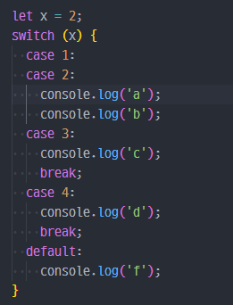

Javascript Quiz
Q. 다음 중 삼항 연산자를 이용해 gender가 0이면 '남자', 0이 아니면
'여자'를 출력하는 코드로 옳은 것은? (gender 변수는 이미 선언되어
있다고 가정)
-
console.log(gender == 0 : '남자' ? '여자');
console.log(gender == 0 ? '남자' : '여자');console.log(gender == 0 : '여자' ? '남자');console.log(gender == 0 ? '여자' : '남자');
Q. 다음 코드 실행 결과는?

b-
a
b
-
b
c
-
a
b
c
f
Q. 다음 중 while 반복문의 시작을 올바르게 작성한 것은?
while (i <> 7)while (i !== 7)while (i =! 5) thenwhile i != 7:
Q. 다음 중 for 반복문의 시작을 올바르게 작성한 것은?
for i = 1 to 5for (i <= 5; i++)for (i = 0; i <= 5)for (let i = 0; i <= 5; i++)